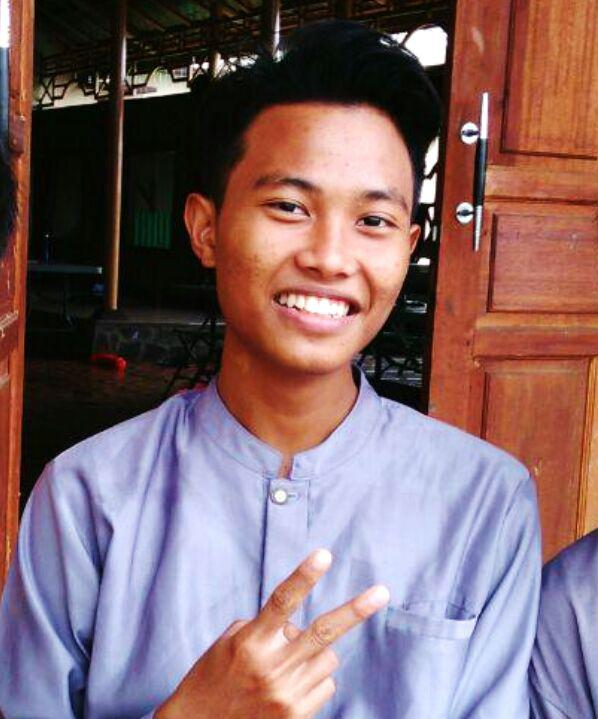
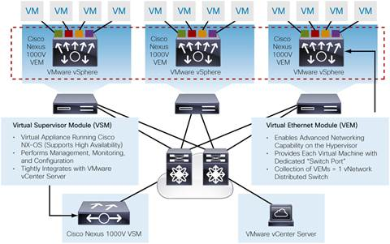

السَّلاَمُ عَلَيْكُمْ وَرَحْمَةُ اللهِ وَبَرَكَاتُهُ
(assalamualaikum warahmatullahi wabarakatuh)
VMware vSphere

| Fauzan A. Noor |
| Pesantren Sysadmin |
| +62 857 7686 9911 |
| fauzanooor@gmail.com |
| https://fauzanooor.id |
Pesantren IDN ?
IDN = Integrasi Data Nusantara
oleh Pak Dedi Gunawan
tahun 2008
IDN Foundation
oleh Pak Rofiq Fauzi
tahun 2013
- Untuk anak SD-SMP (10 - 15 tahun)
- Untuk anak SMK (16 - 19 tahun)
- Untuk anak kuliahan (18 - 22 tahun)
- Untuk guru - guru SMK
- Untuk dosen
Pesantren IDN
- Pesantren Networkers
- Pesantren Programmer
- Pesantren Networkers CCIE
- Pesantren Sysadmin
- Pesantren Programmer Muslimah (baru!)
Sejarah dari VMware
1998
VMware dibuat

1999
VMware diluncurkan secara resmi

2001
VMware memasuki pasar server
| VMware GSX |
| VMware ESX now ESXi |
2008 Jul
CFO, CEO & President dari VMware, Diane Greene di keluarkan dari jajaran direktur VMware

2008 Sep
VMware mengumumkan berkolaborasi dengan Cisco Systems
Cisco Nexus 1000v

2016 Des
Dell membeli VMware dengan harga $500 juta
Produk - Produk VMware

Sertifikasi
- SDDC, Software Defined Data Center
- Data Center Virtualization (DCV)
- Cloud Management & Automation (CMA)
- Network Virtualization (NV)
- DTM, Desktop Mobility
- udah itu doang
Sertifikasi - Role

| Solution Design Architecture | VCDX |
| Implementation | VCIX |
| Administration | VCP |
| Business IT | VCA |
vSphere
| vCenter |
vSphere Client
|
| vMotion |
| DRS / SDRS |
| dan lain lain.. |
Konsep Virtualisasi
process of creating a software-based (or virtual) representation of something rather than a physical one.
VMware
act of creating a virtual (rather than actual) version of something, including virtual computer hardware platforms, storage devices, and computer network resources.
ikipedia

4 Karakteristik Penting dariVirtual Machine
1
Partisi
- Menjalankan banyak sistem operasi dalam 1 PC fisik
- Membagi sumber daya yang dipakai untuk virtual machine
2
Isolasi
- Memisahkan atau mengisolasi keamanan dan fault pada level hardware
- Menentukan kinerja VM dengan menggunakan controller sumber daya
3
Enkapsulasi
- akan menyimpan semua state dalam file
- Menyalin atau memindahkan VM dengan mudah
4
Keleluasaan Hardware
- semua virtual machine dapat dipindahkan ke semua server fisik
Teknik Virtualisasi
- Full Virtualization
- Para Virtualization
- OS Virtualization
Full Virtualization

Para Virtualization

OS-Level Virtualization

Tipe Hypervisor
- (Hypervisor tipe 1) Baremetal
- (Hypervisor tipe 2) Hosted
Hypervisor tipe 1 = Baremetal

Hypervisor tipe 2 = Hosted

Baremetal - Hosted

Kelebihan
+ Biaya

+ Backup & Recovery

+ Deployment

+ Penggantian
Hardware

+ Meminimalisir
Downtime
Kekurangan

Satu mati, ...

Satu mati,
semua mati

Satu dihack, ...

Satu dihack,
semua dihack
ngga ada yang nanya kan?
"Mak Udah.."
- Bocil (6 - 10tahun)
Komponen yang di gunakan
| Nama Komponen | Jumlah | Keterangan |
|---|---|---|
| VMware Workstation | 1 | ... |
| VMware ESXi 6.0 | 2 |
|
| VMware vCenter | 1 | ... |
| FreeNAS | 1 | ... |
Spesifikasi minimal tiap komponen
| Nama Komponen | CPU | RAM | HDD |
|---|---|---|---|
| ESXi 1 & 2 | 1cpu, 2cores | 4GB | 30GB |
| vCenter | 2cpu, 1core | 4GB | 30GB |
| FreeNAS | 1cpu, 1core | 1GB | 2x10GB - 30GB |
Jaringan yang digunakan
| Nama Komponen | adapter | IPv4 |
|---|---|---|
| PC | VMnet 8 (NAT) | 100.100.100.5/24 |
| ESXi 1 | VMnet 8 (NAT) | 100.100.100.10/24 |
| ESXi 2 | VMnet 8 (NAT) | 100.100.100.20/24 |
| vCenter | VMnet 8 (NAT) | 100.100.100.30/24 |
| FreeNAS | VMnet 8 (NAT) | 100.100.100.50/24 |
Rules!
- Tanya
- Tanya
- Tanya
Cara Lab VMware
- Click itu tu
- Click ini ni
- Click itu tu
Ayo Nge-LAB!!
Script CPU Stress
openssl speed -multi $(cat /proc/cpuinfo | grep processor | wc -l)